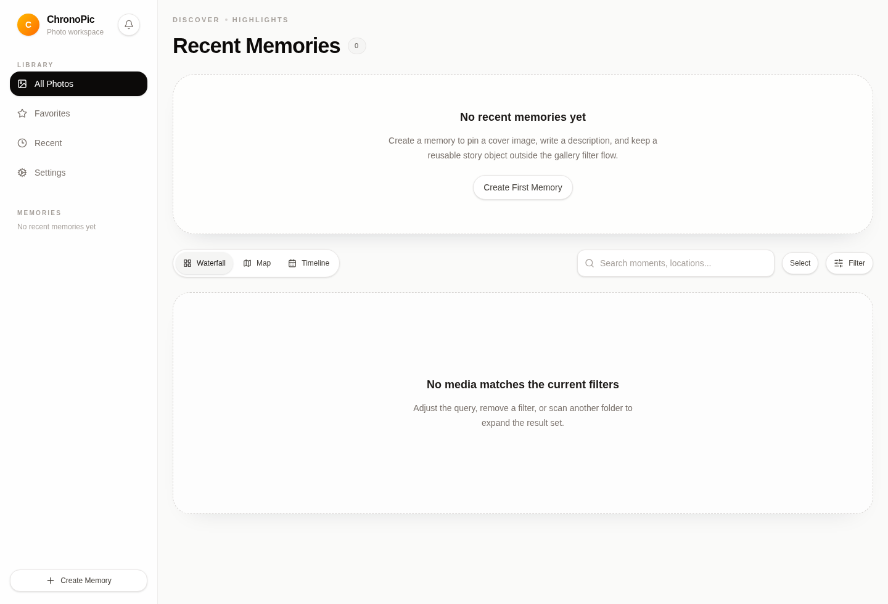

ChronoPic UX Refine Research
Primary Finding
P0
First-run home is a dead end
The empty home screen reads as a filtered result failure. The app needs to make the first meaningful action explicit: add a local folder, then scan it.

Sources
- Material Design empty states
- Material Design navigation
- Apple HIG patterns
- UserOnboard empty-state onboarding
Issue Inventory
P1
Navigation priority should stay contextual
Global navigation is stable. Add/scan actions are better placed in first-run and settings contexts than as permanent global chrome.
P1
Empty states need separate meanings
No-source is onboarding, no-indexed-photo is operational, and no filter result is query feedback. The first-run panel now covers the first two.
P2
Recent Memories can be reduced before content exists
The section is useful after setup, but it should not outrank the first local-library action during first run.
P2
Settings remains visually heavy
Settings is functional, but later polish should flatten nested card surfaces into quieter full-width panels.